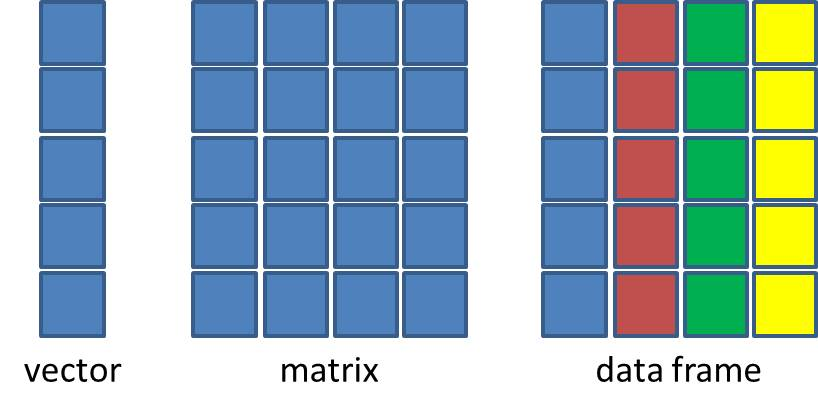

nombre edad nota ciudad
1 Ana 20 85 Madrid
2 Juan 22 90 Barcelona
3 María 19 78 Valencia
4 Pedro 21 92 Sevilla
5 Lucía 23 88 BilbaoAnálisis de datos con Tidyverse
Sobre mi

- Biólogo Marino (2006; UABCS)
- Maestría en Uso Manejo y Preservación de los Recursos Naturales (2009; CIBNOR)
- Doctor en Ciencias Naturales (Uni Bremen/AWI)
- Posdoct Dept Acuicultura (2019 - 2021)
- Posdoct Acuicultura (2022 - 2025; CIBNOR)
¿Que es el Tidyverse?

Un conjunto de paquetes de R diseñados para ciencia de datos.
Todos los paquetes comparten una filosofía, gramática y estructura.
Diseñados para apoyar el flujo de trabajo de cualquier proyecto de análisis de datos.

Paquetes y funciones

¿Que ventajas tiene usar Tidyverse?
- Eficiencia y consistencia
- Simplificación de código
- Intuitivo para el humano
base <- df[df$nota > 85, c("nombre", "nota")]
base <- base[order(base$nota, decreasing = TRUE), ]¿Que ventajas tiene usar Tidyverse?
- Eficiencia y consistencia
- Simplificación de código
- Intuitivo para el humano
nombre edad nota ciudad
1 Ana 20 85 Madrid
2 Juan 22 90 Barcelona
3 María 19 78 Valencia
4 Pedro 21 92 Sevilla
5 Lucía 23 88 Bilbaotidy <- df %>%
select(nombre, nota) %>%
filter(nota > 85) %>%
arrange(desc(nota))¿Realmente necesito aprender a usar Tidyverse?

¿Quien desarrolla Tidyverse?


R

Rstudio

Rstudio
Integrated Development Environemnt (IDE)

- Escribir código
- Navegar archivos
- Inspeccionar variables
- Visualizar gráficos
- Control de versiones
⚠️ Es necesario tener ambos (R y Rstudio) instalados

Tipos de datos en R
Dentro de las ciencias biológicas hay cuatro tipos de datos en R que podemos encontrar frecuentemente:
- Numéricos (
1, 2, 3.15, 4.6843) - Interger (
1L, 2L, 3L, 4L) - Lógicos (
TRUE / FALSE) - Texto (
"I love R")
Estructura de datos en R
Hay cuatro estructuras de datos principales en R que son fundamentales para manejar y analizar datos:
- Vector: Una secuencia de datos del mismo tipo (numérico, texto, lógico).
- Matriz: Una tabla bidimensional de datos del mismo tipo.
- Data Frame: Una tabla bidimensional de datos que pueden ser de diferentes tipos.
- Lista: Una colección de objetos que pueden ser de diferentes tipos y estructuras.

Estructura de datos en R
Vectores
v_numero <- c(1, 2, 3, 4, 5)
v_numero[1] 1 2 3 4 5v_texto <- c("A", "B", "C", "D", "E")
v_texto[1] "A" "B" "C" "D" "E"Estructura de datos en R
Matrix
m <- matrix(1:9, nrow = 3, ncol = 3)
m [,1] [,2] [,3]
[1,] 1 4 7
[2,] 2 5 8
[3,] 3 6 9Estructura de datos en R
data.frame
# dataframe combinando número, texto y lógico
df <- data.frame(
id = c(1,2,3,4,5),
nombre = c("Ana", "Juan", "María", "Pedro", "Lucía"),
aprobado = c(TRUE, TRUE, FALSE, TRUE, FALSE)
)
df id nombre aprobado
1 1 Ana TRUE
2 2 Juan TRUE
3 3 María FALSE
4 4 Pedro TRUE
5 5 Lucía FALSEDirectorios de trabajo
El directorio de trabajo working directory es la carpeta donde R busca archivos por defecto.
Para saber en que carpeta estas trabajando, puedes usar el comando
getwd()[1] "C:/Users/migue/OneDrive/Documentos/Cursos/Taller_Tidyverse_CIBNOR_2023/CursoTidyverse2025/slides"y para establecer un directorio de trabajo.
setwd()

Puedes leer la discusión aqui
La posibilidad de que esto tenga el efecto deseado en alguien mas es de 0%

Flujos de trabajo en proyectos

Ventajas:
- Facilita trabajar con rutas relativas
- Mantiene organizados tus scripts, figuras, tablas, etc.
- Mejora la reproducibilidad
- Evita el uso de
setwd()